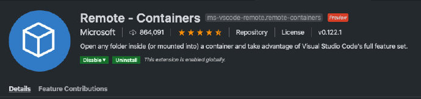
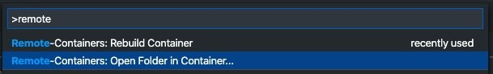
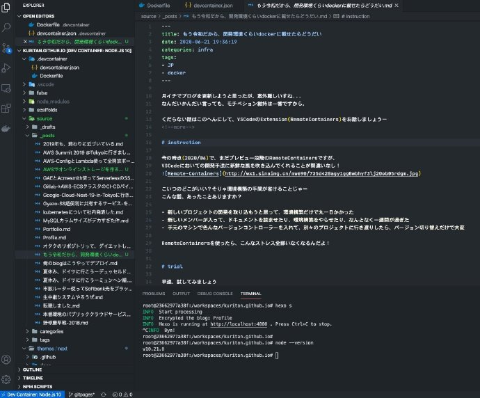

月イチでブログを更新しようと思ったが、案外難しいすね…
なんだいかんだい言っても、モチベション維持は一番ですから。
くだらない話はこのへんにして、VSCodeのExtension(RemoteContainers)をお話しましょうー
instruction
今の時点(2020/06)で、まだプレビュー段階のRemoteContainersですが、
VSCodeにおいての開発手法に新鮮な風を吹き込んでくれることが間違いなし！

こいつのどこがいい？そりゃ環境構築の手間が省けることじゃー
こんな話、あったことありますか？
- 新しいプロジェクトの開発を取り込もうと思って、環境構築だけで丸一日かかった
- 新しいメンバーが入って、ドキュメントを読ませたり、環境構築をやらせたり、なんとなく一週間が過ぎた
- 手元のマシンで色んなバージョンコントローラーを入れて、別々のプロジェクトに行き渡りしたら、バージョン切り替えだけで大変
RemoteContainersを使ったら、こんなストレス全部いなくなるんだよ！
trial
早速、試してみましょう
- インストールは割愛させてくださいね（VSCodeのExtensionから検索してからのinstallだけ）
- Command Paletteからremoteを検索し、Open Folder in Containerを選択
 - 色んなdocker imageが表示されるが、ここはぼくのブログを例にして、node.js 10をポッチと
- ﾁｮｯﾄ処理を待ってから、.devcontainerのディレクトリが作られ、中にはDockerfileとdevcontainer.json２つファイルがあります
- VSCodeのメニューバーから[View] -> [Terminal]をクリックし、ターミナルを開けると、今はもうcontainer環境内にいることがわかった
- そこからもうﾁｮｯﾄアレンジが必要で、ぼくのブログはhexoを使ってるので、hexoのインストールや日本語の対応、timezoneの調整が必要ですね。それらは全部Dockerfileをいじれば簡単です。
Dockerfile
ぼくがいじった後のモノをお見せしましょう。
1 | #------------------------------------------------------------------------------------------------------------- |
こうしたら、もう手元マシンの環境と関係なく、プロジェクトごとの開発環境をかんたんに使い分けられる。
おまけに、gitでチーム共用すれば、誰しも同じ環境でサクサクと開発だけに集中できます。
マシン乗り換えでも開発環境構築をもういっぺんやり直す必要がなくなった。
これぞ神だ！
最後に、今回の更新を書いてる時のVSCode画面キャプチャーの一枚で、締めとしましょう。

みなさんも、Remote-Containersで幸せになりましょう！